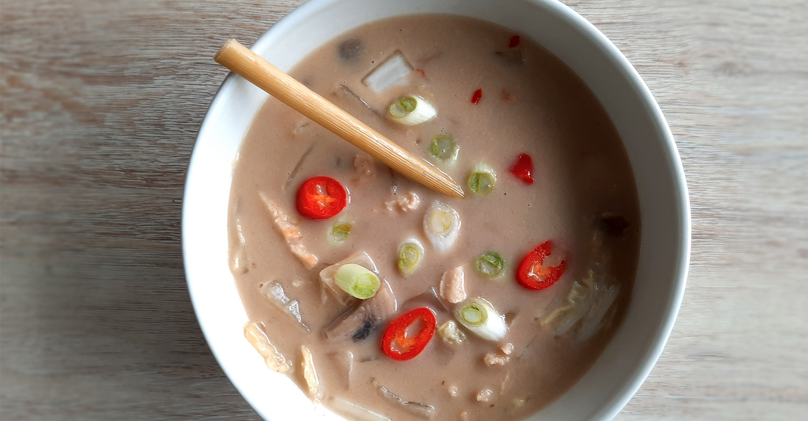

banh mi cat ba style

koreaanse bibimbap

italiaanse caponata

vietnamese filodeegloempia uit de airfryer

ijslandse lamssoep
amerikaanse caesar salade

coq au vin

griekse vega gyros wraps

banh xeo hoi an style

japanse beef teriyaki

biet wellington

indiase dahl linzencurry

franse bouillabaisse

indonesische vegetarische balletjes

kokossoep
Gebruik eens chinese kool in plaats van wortel.

Bereidingsduur: 40 minuten
Aantal personen: 4
Ingrediënten:
400 milliliter kokosmelk
500 milliliter groentebouillon
1 stuk wortel
1 prei
200 gram (vegetarische) kipstukjes
1 ui
150 gram champignons
1 teentje knoflook
1 stengel citroengras
1 theelepels djahé
2 theelepels sambal
3,5 eetlepel citroensap
2 eetlepels tamarindepasta
2 eetlepels palmsuiker
1 stuk rode peper
optioneel chinese kool
stuks lente uitjes
400 milliliter kokosmelk
500 milliliter groentebouillon
1 stuk wortel
1 prei
200 gram (vegetarische) kipstukjes
1 ui
150 gram champignons
1 teentje knoflook
1 stengel citroengras
1 theelepels djahé
2 theelepels sambal
3,5 eetlepel citroensap
2 eetlepels tamarindepasta
2 eetlepels palmsuiker
1 stuk rode peper
optioneel chinese kool
stuks lente uitjes
Instructies:
1. Bij gebruik van vegetarische kip, bak je deze als eerste goudbruin. Doe de bouillon in een pan en maak warm.
2. Snijd de ui en pers de knoflook en doe deze samen met het gekneusde citroengras en het gemberpoeder in een vijzel en maak fijn. Doe dit bij de bouillon en laat alles ongeveer 10 minuten zachtjes doorkoken zonder deksel op de pan.
3. Snijd ondertussen de champignons, prei en wortel en eventueel het kippenvlees. Voeg de groenten en de eventuele (vega) stukjes kip toe aan de soep, de kokosmelk erbij doen en alles zonder deksel op de pan ongeveer 5 minuten zachtjes laten doorkoken.
4. Voeg citroensap toe en breng de soep op smaak met zout en peper. Naar smaak tamarindepasta en palmsuiker toevoegen. Eventueel sambal toevoegen naar smaak. Garneer de soep met rode peper en lente uitjes.
1. Bij gebruik van vegetarische kip, bak je deze als eerste goudbruin. Doe de bouillon in een pan en maak warm.
2. Snijd de ui en pers de knoflook en doe deze samen met het gekneusde citroengras en het gemberpoeder in een vijzel en maak fijn. Doe dit bij de bouillon en laat alles ongeveer 10 minuten zachtjes doorkoken zonder deksel op de pan.
3. Snijd ondertussen de champignons, prei en wortel en eventueel het kippenvlees. Voeg de groenten en de eventuele (vega) stukjes kip toe aan de soep, de kokosmelk erbij doen en alles zonder deksel op de pan ongeveer 5 minuten zachtjes laten doorkoken.
4. Voeg citroensap toe en breng de soep op smaak met zout en peper. Naar smaak tamarindepasta en palmsuiker toevoegen. Eventueel sambal toevoegen naar smaak. Garneer de soep met rode peper en lente uitjes.
Geen tamarindepasta in huis? Gebruik dan pruimensap of druivensap